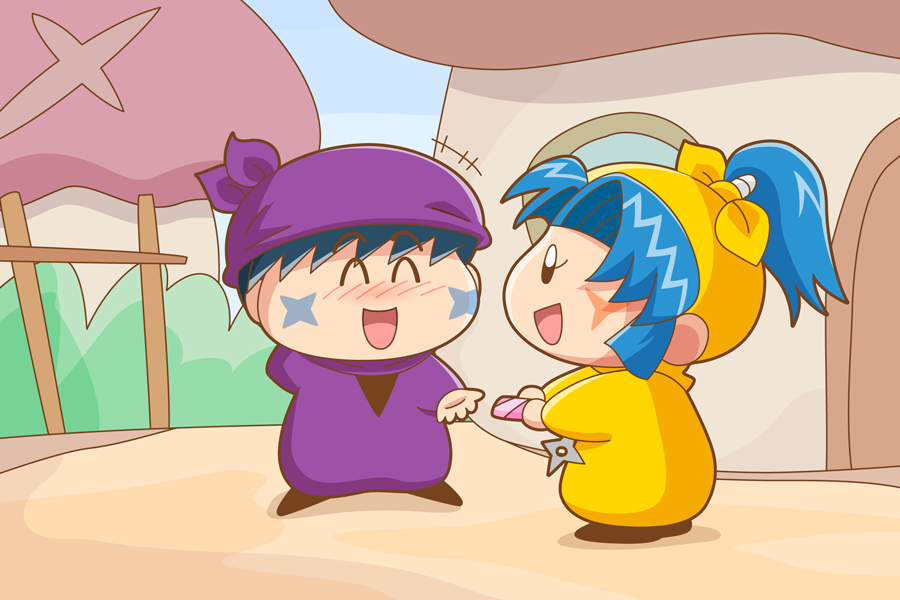

ヤマネ「サスケ先輩！バレンタインデーのチョコでございます！」
サスケ「お、オイラにかだぜ！？
遠慮なくもらっておくぜ！」
ヤマネ「サスケ先輩はすでにたくさんチョコをもらっていそうですが、どうかヤマネのチョコも召し上がっていただければと思うでございます！」
サスケ「たくさん・・・？ ま、まぁなだぜ」
もうすぐバレンタインデーですね。人間界と同じように、妖精界でも女の子は誰にチョコを渡すか、そして男の子は好きな女の子からチョコがもらえるか、妖精界全体がこの日はそわそわしていそうです。
某妖怪アニメで描かれていた話ですが、最近は「本命チョコをもらったかどうかよりも、義理チョコをもらった数」で男の価値が決まるようですね。義理チョコの数の多さで、女の子からの好感度のランク付けができるとか（本当なのか？）。今年の妖精界も、某妖怪アニメのように男の子妖精たちが義理チョコの数を競い合っていたりして！？
さて絵のサスケくんですが、、、他の妖精忍者と比べて義理チョコの数は少ないと勝手に想像しました（サスケファンの方、ごめんなさい）。ネズミやヤシチ、そしてハンゾーにまで好感度を奪われ、２月１４日の午後の時点でまだ０個という悲しい展開に。。。そんな中、ヤマネからもらえた義理チョコは、まるで本命チョコのようにうれしかったでしょうね(^^)。
(2015/2/10)